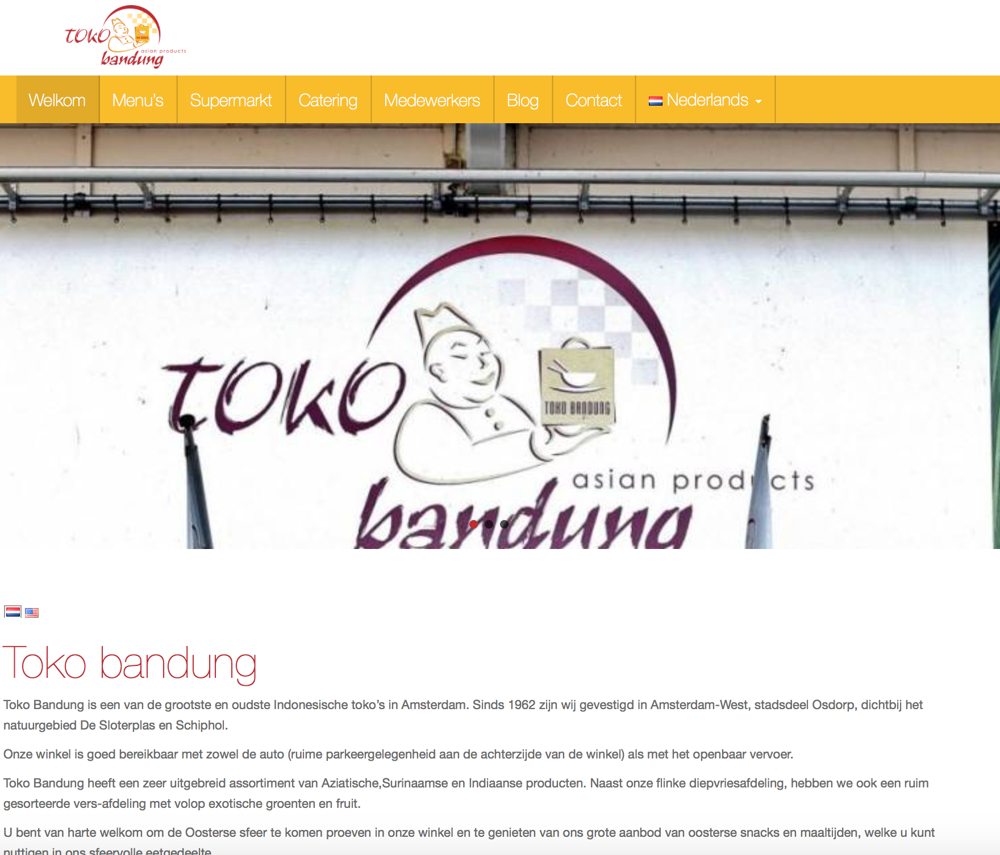

Toko Bandung
Web development
Toko Bandung is een oud bedrijf dat sinds 1976 bestaat in Amsterdam-West.
Het bedrijf is in 2016 overgenomen. De nieuwe eigenaren wilden een nieuwe website.
De oude website was verouderd en had geen mobiel design.
De nieuwe website moest de kleuren van hun logo hebben en overzichtelijk zijn.
- Project naam: Toko Bandung website
- Opdrachtgever: Toko Bandung
- Rol: head of development
- Teamgrootte: 1
- CMS: Wordpress
- Programmeertalen: HTML / CSS
tokobandung.nl